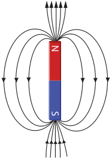
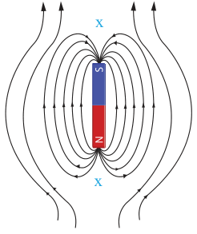
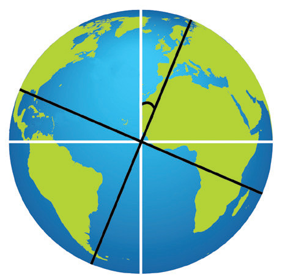

magnetic fields, one due to the bar magnet and the other due to the Earth. Figures 3.51 illustrates the resulting field when the two fields combine. At certain location, the Earth’s field neutralises the field due to the bar magnet. This results into neutral points (x).


Figure 3.51: Fields of a bar magnet against the earth’s magnetic field
Angle of declination
As mentioned earlier, the Earth’s Magnetic North Pole (MNP) and Geographic North Pole (GNP) are not in the same plane. Generally, the Earth’s axis of rotation does not coincide with the magnetic axis as shown in Figure 3.52.

Additionally, the Earth’s magnetic field changes slowly over time so that the MNP moves. There have been times through the Earth’s 4.5-billion-year history that the Earth’s magnetic field was completely reversed. Table 3.1 shows a list of the latitude and longitude of the MSP for some years from 2001.
Table 3.1: Location of MSP for some years
| Year | 2001 | 2002 | 2003 | 2004 | 2005 | 2006 |
|---|---|---|---|---|---|---|
| Latitude | 81.3°N | 81.6°N | 82.0°N | 82.3°N | 82.7°N | 86.50°N |
| Longitude | 110.8°W | 111.6°W | 112.4°W | 113.4°W | 114.4°W | 164.0°E |
The angle of declination also indicates whether the magnetic south is east or west of the geographic north.